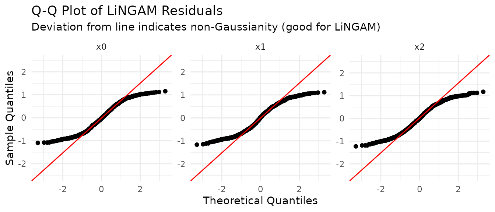

Direct
LiNGAMは観測値が独立同一分布（i.i.d.）であることを仮定するが、時系列
データはこの要件を満たさない。この記事では lingamr
の2つの時系列手法を扱う。
-
VAR-LiNGAM（
lingam_var()）: 時間的依存が自己回帰（AR）部分で表現できる 定常時系列。 -
VARMA-LiNGAM（
lingam_varma()）: 撹乱項に移動平均（MA）部分もあり、過去の ショックが現在に影響する時系列。
データがi.i.d.のクロスセクション観測なら、まず Direct LiNGAM記事から始めること。全手法の概観は 手法選択ガイドを参照。
VAR-LiNGAM：時系列データの因果探索
VAR-LiNGAM（Hyvärinen et al., 2010）は、まずベクトル自己回帰（VAR）モデルを 当てはめて時間的な自己相関を吸収し、その後VARの残差にDirect LiNGAMを適用することで 瞬時因果構造を復元することで、定常な時系列を扱う。モデルは以下の通りである。
ここで、は同時点の因果効果（厳密に非巡回）を、はラグ効果を 表し、は互いに独立な非ガウス擾乱項である。
サンプルデータ
generate_varlingam_sample()
は、VAR(1)-LiNGAMモデルから3変数の時系列を生成する。
瞬時構造は（係数0.6と−0.5）であり、変数をまたぐラグ1効果は
（係数0.3）のみである。
s <- generate_varlingam_sample(n = 1000, seed = 42)
# True instantaneous coefficient matrix B0 (B0[i, j]: x_j -> x_i)
s$true_B0
#> [,1] [,2] [,3]
#> [1,] 0.0 0.0 0
#> [2,] 0.6 0.0 0
#> [3,] 0.0 -0.5 0
# True lag-1 coefficient matrix (M1[i, j]: x_j(t-1) -> x_i(t), structural)
s$true_M1
#> [,1] [,2] [,3]
#> [1,] 0.4 0.0 0.3
#> [2,] 0.0 0.3 0.0
#> [3,] 0.0 0.0 0.5VAR-LiNGAMのあてはめ
データ行列を lingam_var()
に渡す。行は時系列順（最も古い時点が先頭）である必要が ある。
model <- lingam_var(s$data, lags = 1)
model
#> VAR-LiNGAM Result
#> Variables : 3
#> Lag order : 1
#> Causal order (instantaneous): x0 -> x1 -> x2
#>
#> Instantaneous adjacency matrix B0 (row = to, col = from):
#> x0 x1 x2
#> x0 0.000 0.000 0
#> x1 0.576 0.000 0
#> x2 0.000 -0.491 0
#>
#> Lagged adjacency matrix B1 (row = to, col = from):
#> x0 x1 x2
#> x0 0.4 0.000 0.309
#> x1 0.0 0.225 0.000
#> x2 0.0 0.000 0.495結果オブジェクトには、[1 + lags, n_features, n_features]
の形状を持つ3次元配列 adjacency_matrices が含まれる。
-
[1, , ]（"lag0"）: 瞬時行列。B0[i, j]は、同じ時点における からへの直接効果。 -
[k + 1, , ]（"lagk"）: ラグ行列。Bk[i, j]は、から への直接構造効果。
いずれも次元ラベルで取り出せる。
B0 <- model$adjacency_matrices["lag0", , ]
B1 <- model$adjacency_matrices["lag1", , ]
round(B0, 2) # compare with s$true_B0
#> x0 x1 x2
#> x0 0.00 0.00 0
#> x1 0.58 0.00 0
#> x2 0.00 -0.49 0
round(B1, 2) # compare with s$true_M1
#> x0 x1 x2
#> x0 0.4 0.00 0.31
#> x1 0.0 0.23 0.00
#> x2 0.0 0.00 0.50ラグ次数の選択
デフォルトでは、lingam_var()
はベイズ情報量規準（criterion = "bic"）を用いて
1:lags
の中からラグ次数を自動選択する。"aic"、"hqic"、"fpe"
にも対応して
いる。自動選択を使わず固定のラグ次数を使うには、criterion = NULL
を設定する。
# Fix lag order to 2 without IC-based selection
model_lag2 <- lingam_var(s$data, lags = 2, criterion = NULL)定常性の確認
VAR-LiNGAMは定常過程を対象に定義される。check_var_stationarity()
はVARの
コンパニオン行列の固有値を調べる。すべてのモジュラス（絶対値）が厳密に1未満
であれば、過程は定常である。
check_var_stationarity(model)
#> === VAR Stationarity Check ===
#> Lag order: 1
#> Max |eigenvalue|: 0.4942 (threshold 1.00)
#> Stationary: YESmax_modulus
が1以上の場合、単位根過程または発散過程であることを示す。その場合は、
分析前に系列を差分することが推奨される。
残差診断
LiNGAMは誤差項が非ガウスであることを仮定する。
test_varlingam_residual_normality()
は、LiNGAMのイノベーション
（は保存されたVAR残差）が正規性から逸脱しているかを
検定する。p値が小さい（:
ガウス、を棄却する）ことは、モデルの仮定を支持する。
test_varlingam_residual_normality(model)
#> === Residual Normality Test ===
#> Method: shapiro
#> Sample size: 999
#> Significance: 0.050
#> Non-Gaussian: 3 / 3 variables
#>
#> variable statistic p_value is_non_gauss skewness kurtosis
#> x0 0.9498 < 2.2e-16 TRUE 0.088 -1.220
#> x1 0.9536 < 2.2e-16 TRUE -0.007 -1.238
#> x2 0.9518 < 2.2e-16 TRUE -0.046 -1.221
#>
#> Interpretation:
#> is_non_gauss = TRUE -> rejects normality (supports LiNGAM assumption)
#> is_non_gauss = FALSE -> cannot reject normality (LiNGAM may not fit)
#>
#> All residuals are non-Gaussian. LiNGAM assumption is supported.test_varlingam_residual_normality_all()
は複数の検定を一度に実行し、歪度と尖度
（超過尖度）の列を追加して概要を素早く把握できるようにする。
test_varlingam_residual_normality_all(model, methods = c("shapiro", "jb"))
#> Registered S3 method overwritten by 'quantmod':
#> method from
#> as.zoo.data.frame zoo
#> variable skewness kurtosis p_shapiro p_jb all_non_gauss
#> 1 x0 0.088013433 -1.219504 6.041150e-18 1.898481e-14 TRUE
#> 2 x1 -0.007060832 -1.238431 3.114110e-17 1.365574e-14 TRUE
#> 3 x2 -0.046381574 -1.220525 1.452023e-17 2.864375e-14 TRUEplot_varlingam_residual_qq()
は変数ごとの正規QQプロットを描画する。直線の基準線
からの逸脱は非ガウス性を示す。
plot_varlingam_residual_qq(model)総因果効果
estimate_var_total_effect()
は、直接パスとすべての媒介パスを積算することで、ある
変数から別の変数への総因果効果を推定する。from_lag
引数は原因の時点オフセット
を制御する。from_lag = 0（デフォルト）は同時点の総効果を、from_lag = 1
は
からへの1期先の効果を与える。
# Total effect x0 -> x2 (contemporaneous)
estimate_var_total_effect(s$data, model, from_index = 1, to_index = 3)
#> [1] -0.2582049
# Total effect x0(t-1) -> x2(t) (one-step-ahead)
estimate_var_total_effect(s$data, model, from_index = 1, to_index = 3, from_lag = 1)
#> [1] -0.2752551変数のインデックスは1始まりの整数、または文字列としての列名で指定する。
ブートストラップ
lingam_var_bootstrap()
は、残差ブートストラップのサンプルに対してVAR-LiNGAMを
再実行することで、推定構造の不確実性を定量化する。（i.i.d.の行をリサンプルする）
Direct
LiNGAMのブートストラップとは異なり、VAR-LiNGAMは当てはめ値を固定したまま
VAR残差のみをリサンプルし、系列の時間的構造を保持する。
bs_var <- lingam_var_bootstrap(
s$data,
n_sampling = 100L,
seed = 42,
verbose = FALSE
)get_var_probabilities()
は、各有向エッジがブートストラップサンプルの何割で検出
されたかを返す。列のレイアウトは adjacency_matrices
と対応しており、最初の n_features 列が瞬時構造（lag
0）に、次の n_features 列がlag 1に対応し、以下
同様に続く。
round(get_var_probabilities(bs_var), 2)
#> [,1] [,2] [,3] [,4] [,5] [,6]
#> [1,] 0.00 0 0 1.00 0 1.00
#> [2,] 1.00 0 0 0.01 1 0.01
#> [3,] 0.02 1 0 0.00 0 1.00get_var_paths()
は、ブートストラップサンプル全体から見つかった2変数間のすべての
因果パスを、各パスの平均総効果と検出確率とともに列挙する。
# Paths from x0 to x2 at the same time step (from_lag = 0)
get_var_paths(bs_var, from_index = 1, to_index = 3)
#> path effect probability
#> 1 1, 2, 3 -0.28289316 1.00
#> 2 1, 3 0.08085689 0.02
# Paths from x0(t-1) to x2(t) (from_lag = 1)
get_var_paths(bs_var, from_index = 1, to_index = 3, from_lag = 1)
#> path effect probability
#> 1 4, 1, 2, 3 -0.112845948 1.00
#> 2 4, 5, 2, 3 -0.062338986 1.00
#> 3 4, 5, 6,.... 0.024970830 1.00
#> 4 4, 5, 6, 3 -0.139242633 1.00
#> 5 4, 1, 3 0.034930592 0.02
#> 6 4, 5, 6,.... -0.007793044 0.02
#> 7 4, 6, 1,.... -0.007793044 0.02
#> 8 4, 6, 1, 3 0.002044126 0.02
#> 9 4, 6, 3 0.040411503 0.02
#> 10 4, 2, 3 -0.068176510 0.01
#> 11 4, 5, 6,.... -0.018273144 0.01VARMA-LiNGAM：移動平均誤差を持つ時系列
VARMA-LiNGAM（Kawahara et al.,
2011）はVAR-LiNGAMを移動平均（MA）項で拡張した モデルであり、
という形で、ラグ付き変数に加えて過去の撹乱項が現在に影響できる。
lingam_varma()
は誘導形VARMA係数を決定的な二段階Hannan-Rissanen法で推定し
（Python実装は状態空間の最尤法を使う）、残差にDirect LiNGAMを適用して、
AR側の行列 psis（psis[1, , ]
がB0）とMA側の行列 omegas を返す。
s_varma <- generate_varmalingam_sample(n = 1000, seed = 42)
model_varma <- lingam_varma(s_varma$data, order = c(1, 1))
print(model_varma)
#> VARMA-LiNGAM Result
#> Variables : 3
#> Order (p, q) : (1, 0)
#> Causal order (instantaneous): x0 -> x1 -> x2
#>
#> Instantaneous adjacency matrix B0 (row = to, col = from):
#> x0 x1 x2
#> x0 0.000 0.000 0
#> x1 0.613 0.000 0
#> x2 0.000 -0.474 0
#>
#> Lagged adjacency matrix psi1 (row = to, col = from):
#> x0 x1 x2
#> x0 0.472 0.000 0.176
#> x1 -0.169 0.350 -0.166
#> x2 0.000 0.216 0.501check_varma_stationarity()
はARの固有値（定常性）に加えて、Hannan-Rissanen法が
保証しないMAの固有値（可逆性）も確認する。
check_varma_stationarity(model_varma)
#> === VARMA Stationarity / Invertibility Check ===
#> Order (p, q): (1, 0)
#> Max |AR eigenvalue|: 0.5507 (threshold 1.00)
#> Stationary: YES
#> Max |MA eigenvalue|: 0.0000 (threshold 1.00)
#> Invertible: YES残差診断
VAR-LiNGAMと同様に、誤差項は非ガウスであることを仮定する。
test_varmalingam_residual_normality()
は、VARMA-LiNGAMの残差系列が正規性から
逸脱しているかを検定する。デフォルト（on = "innovations"）ではLiNGAMのイノベー
ション（は保存されたVARMA残差）を対象とし、
on = "varma"
を指定すると自体を直接検定できる。p値が小さいこと（:
ガウス 分布の棄却）は、モデルの仮定を支持する。
test_varmalingam_residual_normality(model_varma)
#> === Residual Normality Test ===
#> Method: shapiro
#> Sample size: 999
#> Significance: 0.050
#> Non-Gaussian: 3 / 3 variables
#>
#> variable statistic p_value is_non_gauss skewness kurtosis
#> x0 0.9587 3.42e-16 TRUE 0.079 -1.164
#> x1 0.9561 < 2.2e-16 TRUE 0.007 -1.223
#> x2 0.9638 4.94e-15 TRUE -0.050 -1.139
#>
#> Interpretation:
#> is_non_gauss = TRUE -> rejects normality (supports LiNGAM assumption)
#> is_non_gauss = FALSE -> cannot reject normality (LiNGAM may not fit)
#>
#> All residuals are non-Gaussian. LiNGAM assumption is supported.test_varmalingam_residual_normality_all()
は複数の検定を一度に実行し、歪度と尖度
（超過尖度）の列を追加して概要を素早く把握できるようにする。
test_varmalingam_residual_normality_all(model_varma, methods = c("shapiro", "jb"))
#> variable skewness kurtosis p_shapiro p_jb all_non_gauss
#> 1 x0 0.079398790 -1.163565 3.422206e-16 3.425038e-13 TRUE
#> 2 x1 0.006503161 -1.223165 9.881994e-17 2.986500e-14 TRUE
#> 3 x2 -0.050016361 -1.139036 4.944104e-15 1.522893e-12 TRUEplot_varmalingam_residual_qq()
は変数ごとの正規QQプロットを描画する（対象系列は 同じく on
引数で切り替える）。直線の基準線からの逸脱は非ガウス性を示す。
plot_varmalingam_residual_qq(model_varma)
総因果効果
estimate_varma_total_effect()
は、ある変数から別の変数への総因果効果を推定
する。estimate_var_total_effect()
のVARMA-LiNGAM版にあたり、psi（AR側）に加えて
omega（MA側）の構造も積算する。VAR-LiNGAMと同様に、from_lag = 0（デフォルト）は
同時点の総効果を、from_lag = 1
はからへの1期先の効果を与える。
# Total effect x0 -> x2 (contemporaneous)
estimate_varma_total_effect(s_varma$data, model_varma, from_index = 1, to_index = 3)
#> [1] -0.2512211
# Total effect x0(t-1) -> x2(t) (one-step-ahead)
estimate_varma_total_effect(s_varma$data, model_varma, from_index = 1, to_index = 3, from_lag = 1)
#> [1] -0.1064222ブートストラップ
lingam_varma_bootstrap()、get_varma_probabilities()、get_varma_paths()
は
VAR-LiNGAM版と対応しており、残差ブートストラップサンプルに対してVARMA-LiNGAMを
再実行する。確率行列では、最初の 1 + p
個の列ブロックがpsi（ラグ）行列に、最後の q
個のブロックがomega（MA）行列に対応する。
bs_varma <- lingam_varma_bootstrap(
s_varma$data,
n_sampling = 100L,
order = c(1, 1),
criterion = NULL,
seed = 42,
verbose = FALSE
)
round(get_varma_probabilities(bs_varma, min_causal_effect = 0.1), 2)
#> [,1] [,2] [,3] [,4] [,5] [,6] [,7] [,8] [,9]
#> [1,] 0.00 0 0 0.99 0.00 0.93 0.73 0.00 0.00
#> [2,] 1.00 0 0 0.75 1.00 0.84 0.09 0.01 0.06
#> [3,] 0.07 1 0 0.16 0.08 0.89 0.11 0.00 0.99VARとVARMAのどちらを使うか
- まずVAR-LiNGAMから始める。よりシンプルで高速であり、ラグ次数を情報量規準で 自動選択できる。
- ラグ次数を増やしてもVAR残差に自己相関が残る場合はVARMA-LiNGAMに切り替える。 これは、有限次数のVARでは多数のラグでしか近似できないMA成分を撹乱項が持つ 兆候である。
- どちらの手法も定常性を仮定する。
check_var_stationarity()/check_varma_stationarity()で確認し、単位根が疑われる場合は系列を差分する。
関連記事
- 手法選択ガイド — データに合う手法の選び方
- Direct LiNGAM 詳説 — i.i.d.向けの基本手法
- ブートストラップと診断 — 推定構造の信頼性評価